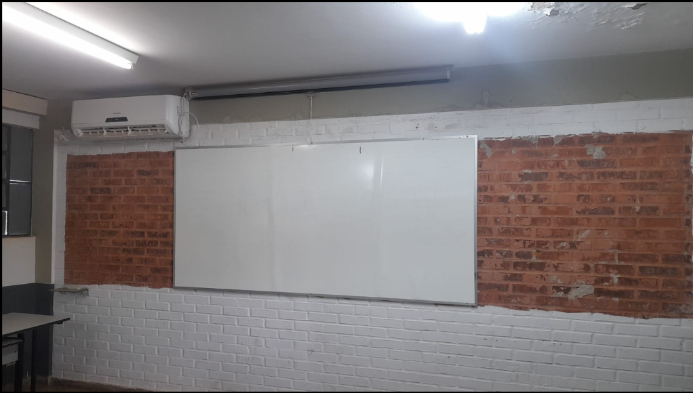
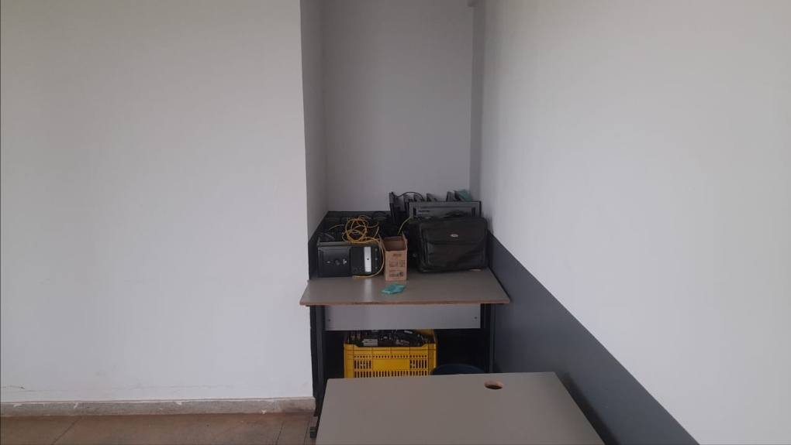

Centro Acadêmico de Ciência da Computação
O que é um Centro Acadêmico?
O Centro Acadêmico de Ciência da Computação, é uma associação sem fins lucrativos criada no ano de 2017 no IF Goiano campus Morrinhos, cabendo assim representar os estudantes do curso de Ciência da Computação dentro e fora da universidade, promovendo eventos, palestras e diversas outras atividades que possam ajudar o estudante a se sentir acolhido por todos.
Formação Acadêmica
Promovemos eventos, workshops e cursos complementares.
Representação Estudantil
Somos a voz dos estudantes junto à coordenação.
Desenvolvimento
Incentivamos o desenvolvimento técnico e pessoal.
Sala CACC
Confira agora como foi a evolução da nossa Sala de Reunião/Lazer

